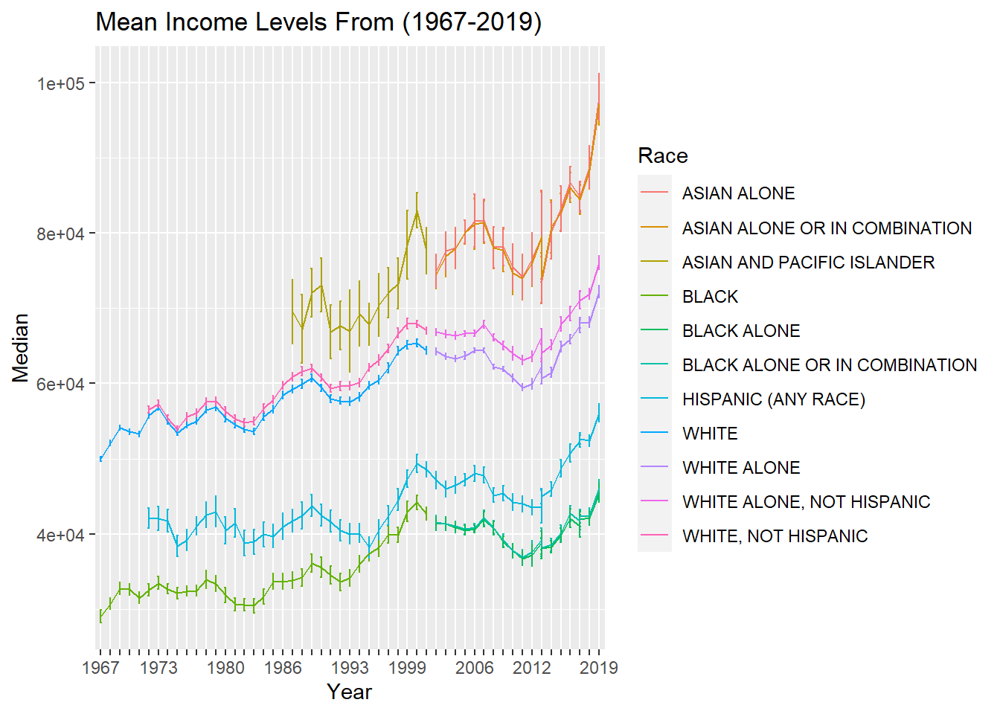

Code
library(tidyverse)
library(ggplot2)
library(dplyr)
library(readxl)
library(summarytools)
knitr::opts_chunk$set(echo = TRUE, warning=FALSE, message=FALSE)library(tidyverse)
library(ggplot2)
library(dplyr)
library(readxl)
library(summarytools)
knitr::opts_chunk$set(echo = TRUE, warning=FALSE, message=FALSE)Cleaning and Pivoting A Data Frame
The data set I have read in is “USA Households*.xlsx” ⭐⭐⭐⭐
dataset <- data.frame()
file_name <- "_data/USA Households by Total Money Income, Race, and Hispanic Origin of Householder 1967 to 2019.xlsx"
cnames <- read_excel(file_name, sheet = 1, skip = 4, n_max = 0) %>% names()
cnames[2:9] <- gsub('[\r\nto\r\n]+', '-',cnames[2:9])
cnames <- c("Year","Number_thousands","Total",cnames[2:10],"Median","Error_of_Median","Mean","Error_of_Mean")
dataset <- read_excel(file_name, sheet = 1, skip = 5,col_names = cnames)
print(dfSummary(dataset))Data Frame Summary
dataset
Dimensions: 383 x 16
Duplicates: 0
--------------------------------------------------------------------------------------------------------------------------
No Variable Stats / Values Freqs (% of Valid) Graph Valid Missing
---- ------------------- ------------------------------- --------------------- ---------------------- ---------- ---------
1 Year 1. 2002 8 ( 2.1%) 383 0
[character] 2. 2003 8 ( 2.1%) (100.0%) (0.0%)
3. 2004 7 8 ( 2.1%)
4. 2005 8 ( 2.1%)
5. 2006 8 ( 2.1%)
6. 2007 8 ( 2.1%)
7. 2008 8 ( 2.1%)
8. 2009 6 8 ( 2.1%)
9. 2010 5 8 ( 2.1%)
10. 2011 8 ( 2.1%)
[ 88 others ] 303 (79.1%) IIIIIIIIIIIIIII
2 Number_thousands 1. 6750 2 ( 0.6%) 340 43
[character] 2. 100065 1 ( 0.3%) (88.8%) (11.2%)
3. 100113 1 ( 0.3%)
4. 10034 1 ( 0.3%)
5. 100528 1 ( 0.3%)
6. 100568 1 ( 0.3%)
7. 101018 1 ( 0.3%)
8. 10192 1 ( 0.3%)
9. 102528 1 ( 0.3%)
10. 103874 1 ( 0.3%)
[ 329 others ] 329 (96.8%) IIIIIIIIIIIIIIIIIII
3 Total 1 distinct value 100 : 340 (100.0%) IIIIIIIIIIIIIIIIIIII 340 43
[numeric] (88.8%) (11.2%)
4 Under $15,000 Mean (sd) : 13.1 (5.2) 142 distinct values : 340 43
[numeric] min < med < max: : (88.8%) (11.2%)
6.3 < 10.9 < 27.2 : :
IQR (CV) : 7.2 (0.4) . : : .
: : : : . . : . . .
5 $15,000-$24,999 Mean (sd) : 10.7 (2.7) 104 distinct values : 340 43
[numeric] min < med < max: : (88.8%) (11.2%)
5 < 10.1 < 17.7 : :
IQR (CV) : 3.8 (0.3) : . : : . : .
. : : : : : : : : .
6 $25,000-$34,999 Mean (sd) : 10.1 (2.1) 87 distinct values : 340 43
[numeric] min < med < max: . : . (88.8%) (11.2%)
5 < 9.9 < 15.5 : : . :
IQR (CV) : 2.7 (0.2) . : : : : .
. : : : : : : : :
7 $35,000-$49,999 Mean (sd) : 13.5 (2.2) 93 distinct values : . 340 43
[numeric] min < med < max: : : (88.8%) (11.2%)
7.7 < 13.8 < 20.6 . : : .
IQR (CV) : 2.3 (0.2) . : : : :
. : : : : : : .
8 $50,000-$74,999 Mean (sd) : 18 (2.4) 92 distinct values : 340 43
[numeric] min < med < max: : : (88.8%) (11.2%)
12.9 < 17.5 < 25.8 : : .
IQR (CV) : 2.9 (0.1) . : : : :
. : : : : : : : .
9 $75,000-$99,999 Mean (sd) : 12.2 (2.1) 86 distinct values : . 340 43
[numeric] min < med < max: : : (88.8%) (11.2%)
5.5 < 12.6 < 16.3 : : : :
IQR (CV) : 3.4 (0.2) : : . : : :
. : : : : : : : :
10 $100,000-$149,999 Mean (sd) : 12.6 (4) 130 distinct values . : 340 43
[numeric] min < med < max: : : : (88.8%) (11.2%)
2.7 < 13.1 < 19.9 : . . : :
IQR (CV) : 6.4 (0.3) . : : : : : .
. : : : : : : : :
11 $150,000-$199,999 Mean (sd) : 5.1 (2.9) 104 distinct values : 340 43
[numeric] min < med < max: : (88.8%) (11.2%)
0.4 < 4.3 < 12.5 . : :
IQR (CV) : 4.1 (0.6) : : : . . :
: : : : : : : : . .
12 $200,000 and over Mean (sd) : 4.7 (3.8) 115 distinct values : 340 43
[numeric] min < med < max: : : (88.8%) (11.2%)
0.1 < 3.5 < 18.9 : : :
IQR (CV) : 4.9 (0.8) : : . : .
: : : : . : . .
13 Median Mean (sd) : 55534.5 (14465.9) 339 distinct values : : 340 43
[numeric] min < med < max: : : : (88.8%) (11.2%)
29026 < 56101.5 < 98174 : : : :
IQR (CV) : 22391.5 (0.3) : : : : : : . .
: : : : : : : : .
14 Error_of_Median Mean (sd) : 1143.7 (996.3) 308 distinct values : 340 43
[numeric] min < med < max: : (88.8%) (11.2%)
268 < 813 < 6080 : .
IQR (CV) : 839.5 (0.9) : :
: : . . . .
15 Mean 1. 100041 1 ( 0.3%) 340 43
[character] 2. 100399 1 ( 0.3%) (88.8%) (11.2%)
3. 101732 1 ( 0.3%)
4. 101962 1 ( 0.3%)
5. 102300 1 ( 0.3%)
6. 102588 1 ( 0.3%)
7. 102752 1 ( 0.3%)
8. 103291 1 ( 0.3%)
9. 103725 1 ( 0.3%)
10. 103815 1 ( 0.3%)
[ 330 others ] 330 (97.1%) IIIIIIIIIIIIIIIIIII
16 Error_of_Mean 1. N 3 ( 0.9%) 340 43
[character] 2. 1033 2 ( 0.6%) (88.8%) (11.2%)
3. 1167 2 ( 0.6%)
4. 1240 2 ( 0.6%)
5. 1333 2 ( 0.6%)
6. 1371 2 ( 0.6%)
7. 3050 2 ( 0.6%)
8. 306 2 ( 0.6%)
9. 310 2 ( 0.6%)
10. 316 2 ( 0.6%)
[ 301 others ] 319 (93.8%) IIIIIIIIIIIIIIIIII
--------------------------------------------------------------------------------------------------------------------------Each Demographic in the data set is sepereated in sections and lists all the years recorded for that demographic. This needs to be added as a column for each of the data points. These lines are blank aside from labeling the demographic in the first column so you can collect and mark which rows belong to which demographic. Another item to be cleaned is the aggregate data for “all races” as this is combination of other data points.The extra lines of information explaining the table at the need to be removed.
race_name_rows <- which(is.na(dataset$Total))
race_name_rows <- race_name_rows[1:13]
race_names <- c()
for (x in dataset[race_name_rows,1]){
x <- gsub('[0-9]+', '', x)
race_names <- c(race_names,x)
}
race_values=c(NA)
index<-1
num_rows<-0
for (x in race_names){
if (index>12) {break}
num_rows<- race_name_rows[index+1]-race_name_rows[index]
for (y in 1:num_rows){
race_values <- c(race_values,x)}
index <- index + 1
}
dataset$"Mean" <- as.numeric(as.character(dataset$"Mean"))
dataset$"Median" <- as.numeric(as.character(dataset$"Median"))
dataset$"Error_of_Median" <- as.numeric(as.character(dataset$"Error_of_Median"))
dataset$"Error_of_Mean" <- as.numeric(as.character(dataset$"Error_of_Mean"))
dataset <- dataset[-c(354:383),]
dataset$Race <- race_values
dataset <- dataset[-which(is.na(dataset$Total)),]
dataset <- dataset %>% select(-"Total")
dataset <- dataset[-which(dataset$Race=="ALL RACES"),]
dataset <- dataset %>% separate(Year, c('Year', 'Year2'))
dataset <- dataset %>% select(-Year2)For the data to be tidy it needs to be separated into each observation and the mean and median would need to repeated for each observation of income level which is extraneous. This data is still useful so it is separated into its own table.
medians_means <- dataset %>% select("Year","Race","Mean","Error_of_Mean","Median","Error_of_Median")
dataset <- dataset %>% select(-"Mean",-"Error_of_Mean",-"Median",-"Error_of_Median")This data needs to be pivoted since it is hard to read and filter since there are multiple observations all in one row. This makes data maniopulation grouping filtering and sort much more inconvient. The final dimensions will have many more rows but only 4 columns. This is because there are a total of 9 different income levels that are going to be represented with one column containing a string which is that bracket of income level. Below is a calulation of how many new rows there will be considering each demographic the year taken and thier income level will have its own dedicated row.
new_rows <- nrow(dataset) * (ncol(dataset)-3)
new_col <- 3 + 1
cat(sprintf("After pivoting the expected number of rows is %s and the number of columns is %s\nThe current number of rows is %s and the number of columns is %s\n",nrow(dataset),ncol(dataset),new_rows,new_col))After pivoting the expected number of rows is 285 and the number of columns is 12
The current number of rows is 2565 and the number of columns is 4dataset <- dataset %>%
pivot_longer(
cols=cnames[4:12],
names_to = "income_level",
values_to = "percent",
values_drop_na = TRUE
)
dataset$Number_thousands <- as.numeric(as.character(dataset$Number_thousands ))
dataset$percent <- as.numeric(as.character(dataset$percent))
dataset$Number_thousands <- dataset$Number_thousands * dataset$percent/100
dataset <- dataset %>% select(-percent)
dataset$Number_thousands <- dataset$Number_thousands %>% replace_na(0)
cat(sprintf("To confirm after pivoting the current number of rows is %s and the number of columns is %s\n",nrow(dataset),ncol(dataset)))To confirm after pivoting the current number of rows is 2565 and the number of columns is 4only_race_income <- dataset %>% select(-Year)
invisible(only_race_income %>% group_by(Race,income_level) %>% summarise(across(Number_thousands, sum)))
only_race_income$income_level = factor(only_race_income$income_level, levels = rev(cnames[4:12]))
ggplot(only_race_income, aes(fill=Race, y=income_level, x=Number_thousands)) + geom_bar(position="dodge", stat="identity")+ ggtitle("Total Number Of Demographic Per Income Bracket From (1967-2019)")
#options(repr.plot.width = 20, repr.plot.height =20)
ggplot(medians_means, aes(x = Year, y = Mean,ymin = Mean-Error_of_Mean, ymax = Mean+Error_of_Mean, group=Race, color=Race)) + geom_errorbar(width = 0.2) + geom_line() + scale_x_discrete(guide = guide_axis(check.overlap = TRUE))+ggtitle("Mean Income Levels From (1967-2019)")
ggplot(medians_means, aes(x = Year, y = Median,ymin = Median-Error_of_Median, ymax = Median+Error_of_Median, group=Race, color=Race)) + geom_errorbar(width = 0.2) + geom_line() + scale_x_discrete(guide = guide_axis(check.overlap = TRUE))+ggtitle("Mean Income Levels From (1967-2019)")